Performance du SI
Marc BOJOLY
OCTO Technology Paris, Manager et consultant Co-fondateur du Performance User Group Paris
Cyril PICAT
OCTO Technology Lausanne, consultantLe projet : migration d'une banque vers une nouvelle plateforme titres
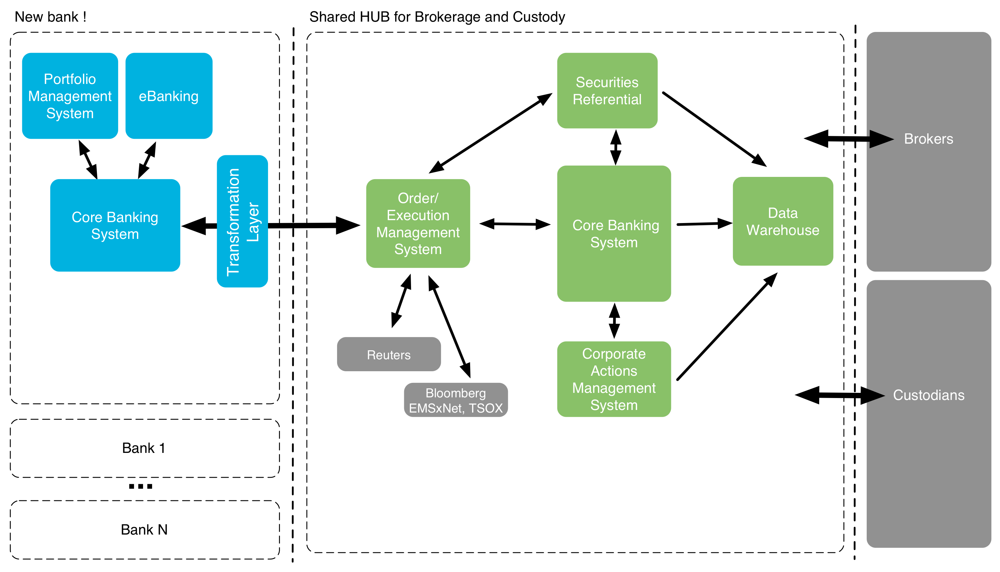Le projet : migration d'une banque vers une nouvelle plateforme titres
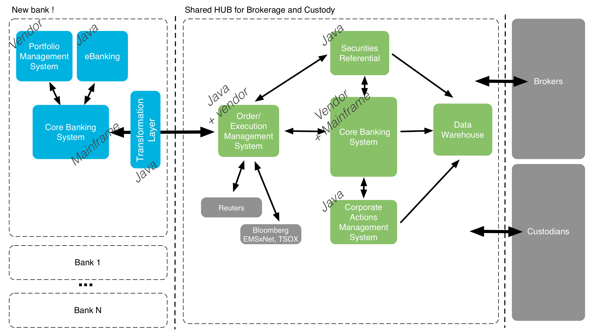Quelques chiffres
Clients : x10
Portefeuilles titres : x5
Positions : x3
Titres : +50%
Ordres de Bourse : x2
et les effets indirects : opérations sur titres etc.
Idées reçues
Ca va passer, on a bien travailler, cela va passer = nier l'exitence du problème
C'est impossible à tester sauf en prod = nier l'exstence de solutions
La charge ne sera pas représentative = nier la fiabilité de ces solutions
On n'y arrivera jamais = mettre en doute la capacité à y arriver
Ma promesse à la fin de ces quelques slides
Vous convaincre qu'une approche est possible
Et vous aider à combattre les idées reçues !
Idée reçue#1 : Le dimensionnement
Idées reçues :La préproduction n'est pas représentative
Il faudrait simuler l'ensemble des actvités de la banque
Notre constat
La plupart des problèmes sont des problèmes de conception80% des problèmes peuvent déjà être identifiés sans dimensionnement correct
100% des problèmes avec une petite machine seront présents sur une machine plus grosse
Idée reçue#2 : L'automatisation
Vous ne pourrez pas l'automatiser on l'a essayé avec QTP et personne n'y est arrivéNotre constat
Certains clients lourds sont très difficiles à tester
Mais il existe des alternatives (e.g. Sikuli)
Adapter vos tests de performance en fonction des enjeux et de la complexité
Idée reçue#3 : Les problèmes sont sur le mainframe
Ayez systématiquemnent l'obsession de la mesure
Dans un monde parfait...
“Fais de ta vie un rêve, et d'un rêve une réalité.” Antoine de Saint-Exupéry - Cahiers de Saint-Exupéry (1900-1944)
Rêve 1 : Avoir une parfaite connaissance de la performance


APM : les limites
Les middleware un peu anciens ou avec trop de spécificités
Les applications natives (si vous n'avez pas les sources)

Quel outillage ?
APM versus outils artisanaux
Rêve 2 : On a ce qu'il faut pour faire les tests
Des développements terminés
Des données migrées
Des personnes disponibles
Et colocalisées...
Les intangibles
Un environnement opérationnel sur un jeu de données minimal
Isoler la zone de mesure
Pour le reste...
Il faut "cadrer" le chantier
Avoir une vue précise des volumes existants et cibles
Lister les problèmes existants
Brainstormer sur les problèmes potentiels
Les problèmes peuvent sembler vertigineux
Ne pas se perdre dans les détails, ne pas aborder les solutions
Préférer l'exhaustivité à la précision
Timeboxer !
Comment y parvenir ?
Entretiens utilisateurs
Entretiens IT
Problèmes existants vs problèmes potentiels
Les problèmes "usuels"
- Capacité en terme de nombre de transactions/jour
- Augmentation de volumétrie (x2)
- SLA temps de réponse end-to-end
- Lenteurs actuelles
- Augmentation du nombre d'utilisateurs
- Impact sur la durée des batchs
- Latence et temps de réponse pour les utilisateurs distants
Et ensuite ?
Construire un plan
La carte vous aide à visualiser et à prioriser, elle ne "résout" pas les problèmes
La réponse à chaque problème pourra (devra) être complètement différente !
Chaque problème reste complexe et lié au reste du SI
Diviser pour mieux régner
2 patterns
- Diviser/découpler : passer d'un test de N systèmes à un test de k<N systèmes (idéalement 1)
- Simplifier : réduire la dimensionnalité (cas de tests, données)
Diviser/découpler : un exemple
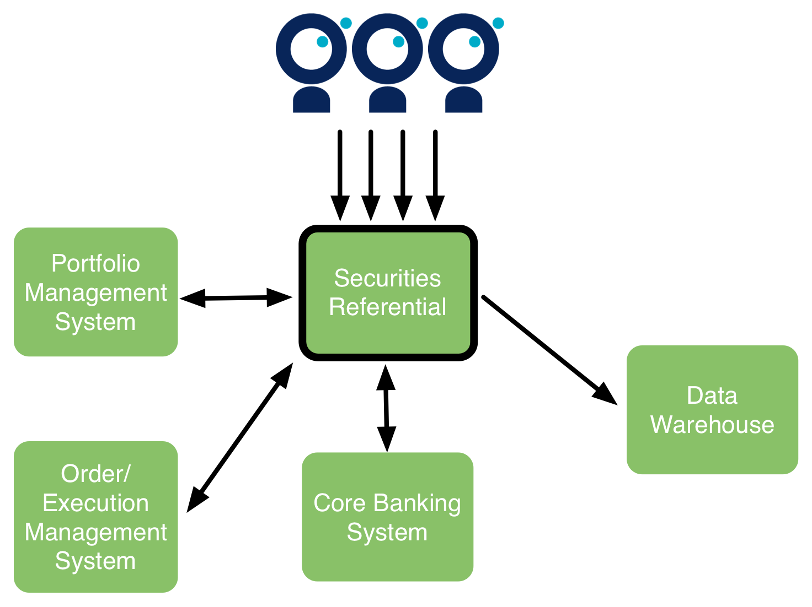Diviser/découpler : un exemple
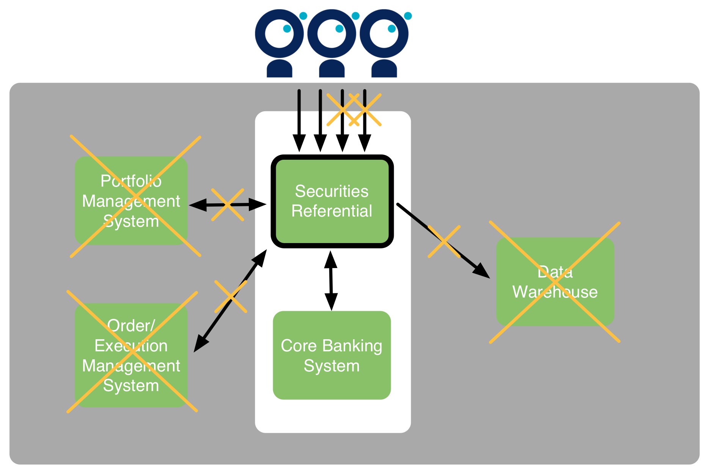Diviser/découpler : généralisons !
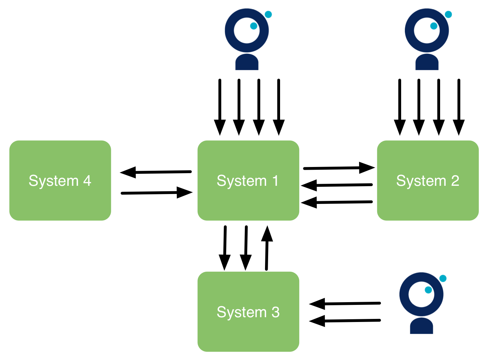Diviser/découpler : généralisons !
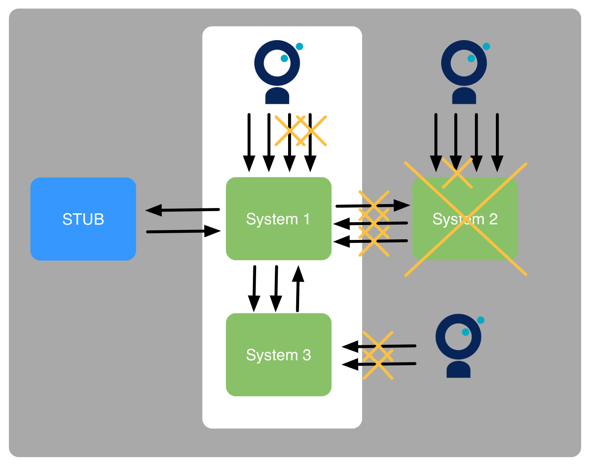Simplifier : des exemples
Ne pas tester tous les cas fonctionnels
Uniquement simuler les actions principales de l'utilisateur
Faire le test de charge avec des données existantes
Utiliser un jeu de données restreint pour les tests
! Attention, certaines simplifications seront fausses. Il faut penser à documenter les hypothèses faîtes !
Et maintenant ?
Le problème est isolé et simplifié, comment je le résous ?
Ne prévoyez pas un test de charge pour tous les problèmes !
Restez pragmatique !
- Analyse de l'existant
- Modélisation et extrapolation
- Test de l'existant
- Test de la cible
- Test end-to-end intégré de la cible
! Certains problèmes devront passer par plusieurs étapes, afin de limiter le risque !
Ne pas sautez les étapes !
Où pouvez-vous vous "planter" ?
Rappel : vous ne pourrez pas garantir à 100% la performance
Vous pouvez vous planter car :
- un risque est passé à travers le brainstorming
- une simplification était trop "simpliste"
D'expérience, les mauvaises décisions étaient dues à :
- une mauvaise connaissance de la performance existante
- une mauvaise connaissance des usages existants
Ne pas oublier les basics
Les tests de charges application par application restent utiles
Les bonnes pratiques qui leur sont associées également
Délimiter le périmètre testé
Car un test de charge reste un test automatisé
Car un test en erreur c'est un test qui ne sert à rien
Comment le délimiter ?
Choisissez soigneusement votre jeux de données
Ou développez des bouchons
Mettre un exemple concret ?
Modélisation de la charge
Comment modéliser le comportement de mes utilisateurs ?
Combien d'utilisateurs simultanés ?
Qu'est-ce qu'un utilisateur simultané ?
La véritée est en production

Construisez un modèle à partir de vos statistiques de production
Modélisation de la charge : Soyez prédictif
Si vous n'avez pas de production, proposez un modèle en fonction des informations que vous avez.

Modélisation de la charge : Soyez prédictif
Si vous n'avez pas de production, proposez un modèle en fonction des informations que vous avez.

Modélisation de la charge : comment l'utiliser ?
Définissez dans vos tests d'injection locaux le nombre d'utilisateurs "simultanés" et le temps de réflexion
val clientSearchChain = group("client_search_page") {
exec(http("client_search_html")
.get("""/ebankingAdmin/acibf/root/contract/contractlist/""")
}
).pause(7,8) //Pause between 7 and 8 seconds
val scn = scenario("AdminSimulation")
.repeat(1) { //Beware of the coordinated omission
exitBlockOnFail {
exec(loginChain)
.exec(clientSearchChain)
}
}
setUp(scn.inject(
rampUsers(120).over(60), //Needs to be adapted to your scenario
).protocols(httpProtocol)
Ne négligez pas les tests de charge unitaire
La vérité est toujours dans la mesure
Comment avaler un éléphant ? Bouchée par bouchée
Les problèmes faibles prennent de l'ampleur au niveau d'un SI
POC

DEMO : une application
5 appels en base de données, 1 traitement
curl -X POST \
-H "Accept: applicaiton/json" \
-H "Content-Type: application/json" \
-d '{"cpuIntensiveComputationsDuration":50, "databaseCallsNumber":5, "databaseCallDuration":10 }' \
http://192.168.99.100:8080/compute
DEMO : on passe à l'échelle avec un petit SI
5 applications qui s'appellent successivement de façon synchrone
5 appels en base de données, 1 traitement
curl -X POST \
-H "Accept: applicaiton/json" \
-H "Content-Type: application/json" \
-d '{"cpuIntensiveComputationsDuration":50, "databaseCallsNumber":5, "databaseCallDuration":10, \
"serviceCalls":[ \
{"computationDescription":{"cpuIntensiveComputationsDuration":50, "databaseCallsNumber":5, "databaseCallDuration":5}, "callsNumber":2 }, \
{"computationDescription":{"cpuIntensiveComputationsDuration":50, "databaseCallsNumber":5, "databaseCallDuration":5}, "callsNumber":2 }, \
{"computationDescription":{"cpuIntensiveComputationsDuration":50, "databaseCallsNumber":5, "databaseCallDuration":5}, "callsNumber":2 }, \
{"computationDescription":{"cpuIntensiveComputationsDuration":50, "databaseCallsNumber":5, "databaseCallDuration":5}, "callsNumber":2 }
] \
}' \
http://192.168.99.100:8080/compute
DEMO : on passe dans un SI réel
$ sudo docker-machine ssh default
$$ sudo tc qdisc add dev docker0 root netem delay 10ms
$$ sudo tc qdisc show dev docker0
Call the database 5 times during 10 ms. each for a total of 57 ms.
CPU intensive compute 45ms.
Call HTTP Ressources : For a total of 0.0 ms.
Call the database 5 times during 10 ms. each for a total of 807 ms.
CPU intensive compute 48ms.
Call HTTP Ressources : For a total of 0.0 ms.
Et concrêtement ?
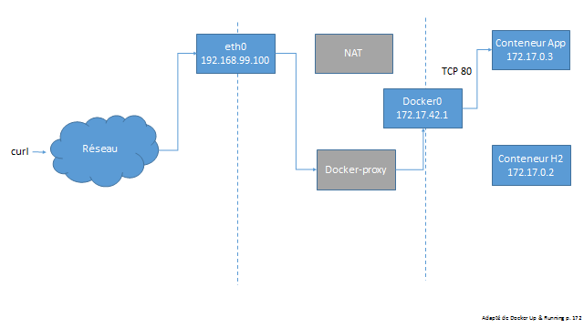Et concrêtement ?

Nous avons simulé une DMZ un peu pointilleuse
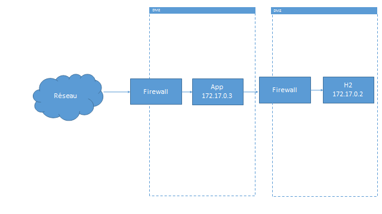En synthèse, les problèmes faibles peuvent devenir critiques au niveau d'un SI
- Latence
- N1 requêtes
- N+1 requêtes imbriquées
Les tests end-to-end sont obligatoires car certains résultats (cf. PoC) peuvent défier l'intuition
Disclaimer
Les tests end-to-end sont complexes. Ceci ne se veut pas une méthode systémique mais un inventaire d'outils à disposition, ainsi qu'un REX sur leur efficacité
Outil #1 : Analyse de la production existante
Analyse des latences entre systèmes
Identification du goulet d'étranglement
Découverte des problèmes de design
Évaluation de la capacité du système
Outil #1 : Analyse de la production existante
Exemple de l'évaluation de la capacité du système
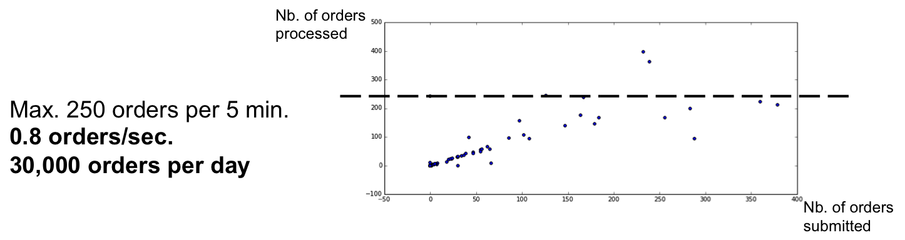Outil #1 : mon REX
Souvent faîte trop tard...
Dur à vendre, pourtant ROI elevé
Commencez petit...
Attention à la répartition de la charge !
Outil #1 : attention aux chiffres !
Outil #1 : attention aux chiffres !
Outil #2 : Benchmark unitaire
Définition : mesure de la réponse à une transaction unitaire
Outil #2 : Benchmark unitaire
Exemple d'analyse
Une représentation en "flame graph" est également adaptée
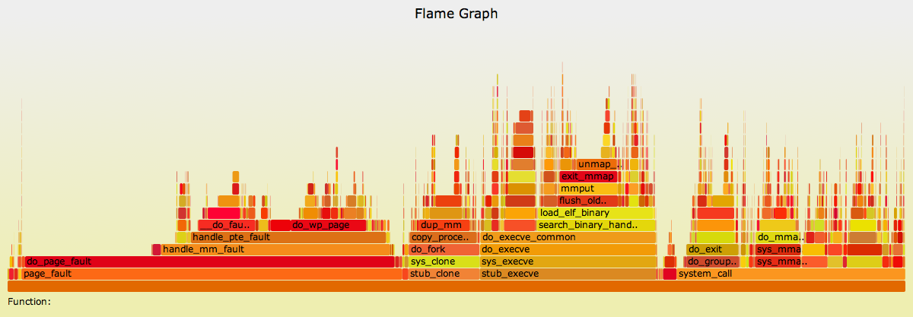Outil #2 : mon REX
La plupart des problèmes de design apparaissent en unitaire
Faîtes-en plusieurs...
Attention à ne pas faire de test de charge avant !
S'il ne faut en garder qu'un, gardez celui-ci !
Outil #3 : le Dirac
Outil #3 : le Dirac
Exemple d'analyse
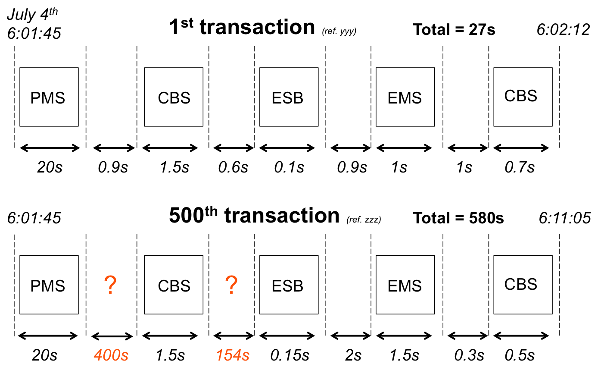Outil #3 : mon REX
Le complément parfait du test unitaire
Plus simple à analyser qu'une journée de production
Teste également la robustesse du système
Greffez-vous sur les tests fonctionnels !
Outil #4 : "rejeu" d'une journée de production
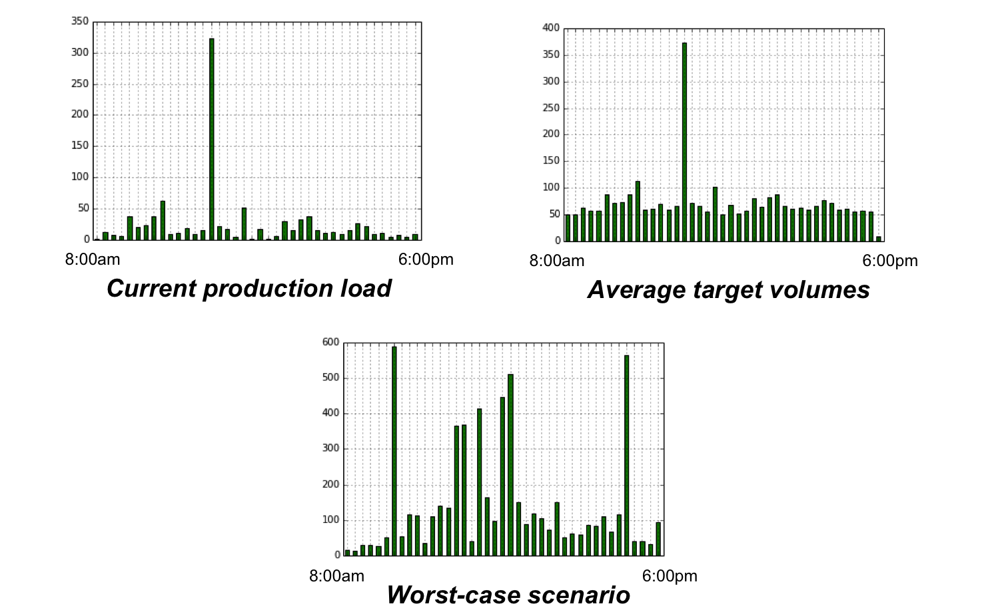simplifiée bien sûr !
Outil #4 : mon REX
Difficile à analyser, notamment les écarts
Difficile à interpréter
En dernier, en impliquant le support métier
Outil #1 et #4 : retour aux bases
La décomposition en unitaire et Dirac simplifie grandement l'analyse
Outil #5 : mettre en production
Tout ce qui peut être mis en production par avance doit l'être
Pensez votre stratégie de migration pour monter en charge progressivement
Inspirez vous des Géants du Web (feature flipping, dark launch, canary)
Que faut-il mesurer ?
Temps entrée / sortie de chaque système
NMON (incl. TOP)
à complèter si nécessaire...
Que faut-il analyser ?
Throughput, temps de réponse/charge
Peut-on extrapoler (à la production) ?
Beaucoup d'extrapolations différentes possibles
Environnement, concurrence, simplifications...
Mon expérience : OUI (sauf le sizing machine)
mais attention de rester "linéaire" dans vos tests !
Où pouvez-vous vous "planter" ?
Rappel : vous ne pourrez pas garantir à 100% la performance
- si vous ne faîtes pas assez d'unitaire
- si votre approche n'est pas assez "data-driven"
- si vous n'avez pas assez simplifié / découplé
Conclusion
- Commencez petit
- Mesurez
- Généralisez : oui mais....